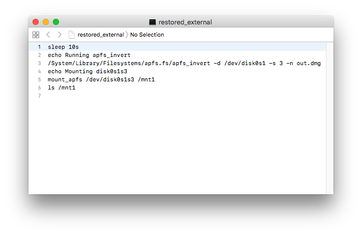

Making custom ramdisk
Unfortunately there is no way of restoring our inverted image if disk0 is mounted, so we have to use a custom ramdisk.
Adding needed binaries
The custom ramdisk has to execute apfs_invert, so we need to make changes to it's filesystem so it will execute our custom binary.Note: The ramdisk can be either one of the two smaller ".dmg" files present in the ipsw.
Unpack original ramdisk into raw dmg:
pyimg4 im4p extract -i xxx.xxxxx.xxx.dmg -o ramdisk.dmg
And mount it:export TMPDIR=$(mktemp -d)
hdiutil attach ramdisk.dmg -mountpoint $TMPDIR/ramdisk
Compile restored-hax (thanks to @b1n4r1b01) and sign it using ldid:xcrun -sdk iphoneos clang -arch arm64 restored-hax.c -o restored_hax
ldid(2) -S restored_hax
Note: don't forget to change disk0s1s3 in source code if new system is a different partition. Rename original restored_external:mv $TMPDIR/ramdisk/usr/local/bin/restored_external $TMPDIR/ramdisk/usr/local/bin/restored_external.bak
And replace it with the compiled binary:cp -a restored_hax $TMPDIR/ramdisk/usr/local/bin/restored_external
Don't forget to unmount the ramdisk:hdiutil detach $TMPDIR/ramdisk
Now pack ramdisk into img4:pyimg4 im4p create -i ramdisk.dmg -f rdsk -o ramdisk.im4p
pyimg4 img4 create -p ramdisk.im4p -m IM4M -o ramdisk.img4
Important! if your target iOS system is iOS 12.x or newer, you must also sign the matching trustcache for the ramdisk.
In the Firmware folder of the ipsw, there are three files with a ".trustcache" extension. Use the exact one with the same name as the ramdisk that was just created.
Now we need to sign and apply the rtsc (Restore Trustcache) tag.
pyimg4 im4p extract -i xxx.xxxxx.xxx.dmg.trustcache -o trustcache.raw
pyimg4 im4p create -i trustcache.raw -f rtsc -o trustcache.im4p
pyimg4 img4 create -p trustcache.im4p -m IM4M -o trustcache.img4
Patching kernel
To boot the custom ramdisk, we'll need to patch the kernel to allow loading custom binaries. Unpack the kernelcache:
Note: The kernelcaches for A7-A9 devices are compressed using a different format than the A10-A11 kernelcaches, so they require different processes for unpacking them.
A7-A9:
pyimg4 im4p extract -i kernelcache.release.* -o kcache.raw --extra kpp.bin
Note: On A7-A9, KPP (Kernel Patch Protection) is a binary appended onto the end of the kernel, and the kernel will refuse to boot without it.
A10-A11:
pyimg4 im4p extract -i kernelcache.release.* -o kcache.raw
Patch the kernel:
Kernel64Patcher kcache.raw kcache.patched -a
Now pack into img4:
A7-A9
pyimg4 im4p create -i kcache.patched -f rkrn --extra kpp.bin --lzss -o kernelcacheramdisk.im4p
pyimg4 img4 create -p kernelcacheramdisk.im4p -m IM4M -o kernelcacheramdisk.img4
A10-A11
pyimg4 im4p create -i kcache.patched -o kernelcacheramdisk.im4p -f rkrn --lzfse
pyimg4 img4 create -p kernelcacheramdisk.im4p -m IM4M -o kernelcacheramdisk.img4